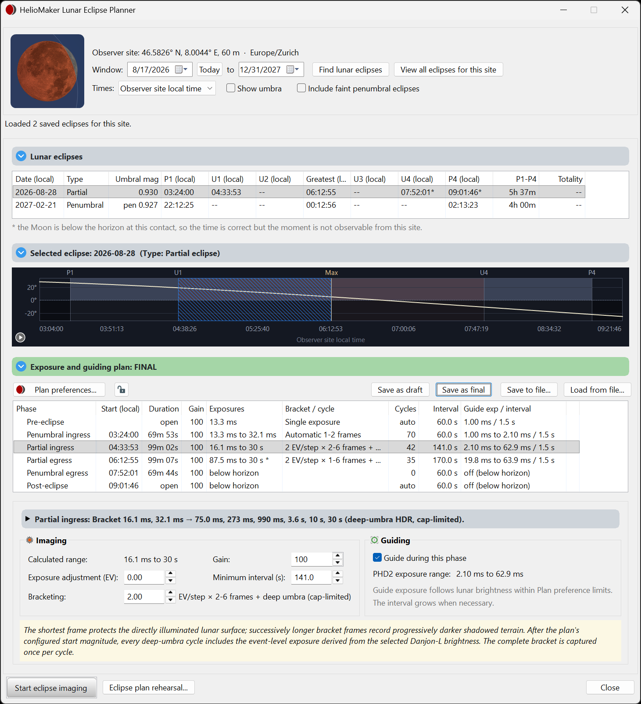

HelioMaker Lunar Eclipse Imaging Guide
Planning, rehearsing and running an automated lunar eclipse capture.
What this guide covers
Use HelioMaker to find a lunar eclipse for your observing site, build adaptive imaging and guiding settings, rehearse the sequence, complete preflight and monitor capture through SharpCap and the custom PHD2 integration.
The Lunar Eclipse Planner supports total, partial and penumbral events, with the phases and local visibility appropriate to the selected eclipse.
What’s in this guide
- Quick startQuick startThe whole lunar eclipse workflow, from choosing an event to checking the saved images.
- 1Prepare in advanceBuild and rehearse the plan while there is time to change the setup.
- 2Gear & rig requirementsChoose how imaging and guiding will share the camera and mount.
- 3Contacts & Moon visibilityRead the lunar contacts and distinguish event timing from what is observable at your site.
- 4Planner basicsFind an event, inspect its geometry and save a plan for rehearsal and live imaging.
- 5Plan preferencesSet the rig reference, brightness assumptions, cadence and camera configuration used to derive the lunar plan.
- 6Capture mode: Still versus LiveChoose and qualify the camera path for lunar HDR imaging.
- 7Phase editorReview the adaptive exposure recipe and timing for each lunar phase.
- 8FocusingEstablish a sharp lunar baseline and rehearse any automatic refocus.
- 9Simulation optionsPractise the sequence with a simulated eclipse clock and choose which parts of the rig to exercise.
- 10Preflight checklistVerify the current plan, clock and equipment before starting the sequence.
- 11The run consoleMonitor phase timing, delivered images, guiding and recovery during the run.

The workflow to practise
Set the site → plan → test → rehearse → approve → preflight → capture
Start with an imaging reference measured for your rig, review the brightness assumptions and long exposures, and leave enough time for the camera and guiding to complete each set. A rehearsal should prove both the sequence and the resulting images.
About this edition
This is a standalone local HTML guide. Open this index in a browser and follow the chapter links. It is separate from HelioMaker’s compiled Microsoft HTML Help for the legacy core.